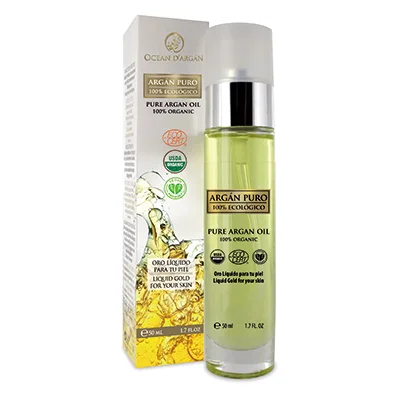

Cosmetic Made in Spain
Language
中文
Spanish
Contack Us
Special offer
Daily necessities
Characteristic food
Skin care
Pure Argan Oil 100% Organic

50ml 49.9€
Pure Argan oil, 100% organic, has the authorization of the USA Government to use Bio label USDA, as well as the certification Vegan Cosmetics. In addition, pure Argan oil maintains its Ecocert certificate, 100% natural and ecological cosmetic. Our Argan oil is pure 100%. Ecocert, USDA and Vegan certified. Pure Argan Oil is composed of: 50% linoleic acid, 15% alpha-linolenic acid, 12% oleic acid, 1% arachidonic acid, 3% gammalinolenic acid, 5% Tocopherols, Ferulic acid, Phytosterols, Squalene and Lupeol, improves the proliferation of keratinocytes that produce keratin in hair, nails and skin. All these elements provide high antioxidant, anti-inflammatory, re-structuring, regenerating and anti-aging properties. It restores the skin and protects it from oxidation caused by free radicals. Pure Argan Oil´s exceptional richness in vitamin E, a powerful antioxidant, allows the skin to fight against external aggression. After a few applications the skin is hydrated and tonified with a smooth and bright look. DIRECTIONS FOR USE: Apply daily. Massage delicately a few drops of argan oil on face, neck and décolletage, previously cleansed, avoiding eye area.
Vida Copyright © 2024 All rights reserved